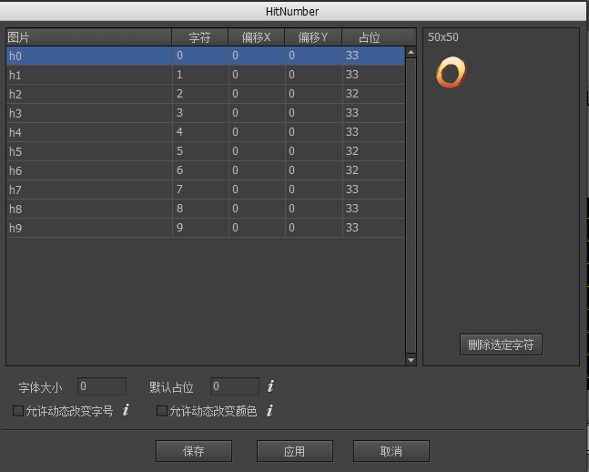
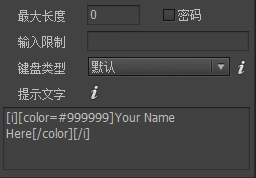

Guide

文本
文本是FairyGUI的一种基础控件。
动态字体
动态字体(Dynamic Font)是指直接使用ttf字体渲染文字。ttf字体文件可能存在于系统中，也可能打包在游戏中。
FairyGUI编辑器运行的环境，与应用实际运行的环境是不相同的。比如你在PC上制作界面，最终界面可能运行在手机上。在编辑界面时，动态字体是使用FairyGUI使用编辑器所在的系统环境的字体，在运行时，则是由实际的运行环境，例如Android系统等提供的字体。设计时的字体可以与运行时的字体不同，但建议选取效果较为相近的。
设置编辑器使用的字体可以在项目属性里设置。运行时的字体则需要由代码设置：
|
设置运行时使用的字体需保证该字体在目标平台上也存在，否则达不到想要的效果。
位图字体
在游戏中经常有这样的设计：一些表达特别元素的字符，使用了图片来制作，例如：

FairyGUI编辑器支持位图字体。首先，我们创建一种字体。点击菜单“编辑”->“创建位图字体”，然后，弹出了字体编辑窗口，我们从资源库里把制作好的数字图片拖入到窗口，并设置每个图片对应的字符，点击保存，这样我们的字体就设置好了。如果要修改每个字符对应的图片，将图片重新拖入即可。
使用图片代替字符的办法，对于少量文本，这是非常方便的，但如果需要嵌入成百上千字，为每个字制作为图片，然后再每个设置对应字符，这工作量就有点大了。FairyGUI编辑器支持外部的位图字体制作工具BMFont、ShoeBox等，这些工具的使用方法请自行参考网络资料。使用外部工具最后会导出一个fnt文件（注意1：文件格式应该选择fnt格式，不支持xml或者json），在编辑器点击导入素材，然后选择这个fnt文件，就可以把字体导入到编辑器里了。
以下是推荐的BMFont导出设置：

以下介绍位图字体设置界面的功能：

图片资源库里一张图片的名字。如果是由BMFont导入的字体，则此栏为空。字符该图片对应的字符。偏移X在水平方向上该字符的偏移。偏移Y在垂直方向上该字符的偏移。负数表示字符上移，整数表示字符下移，但因为文字排版都是基线对齐，下移的结果可能是整行都发生下移。占位一般来说，一个字符的水平占位宽度是由字符图片的宽度决定的。如果这里的数值不为0，则使用该值作为字符的水平占位宽度。字体大小位图字体的字号。在勾选“允许动态改变字号”后有效。默认占位统一设置所有字符的默认水平占位宽度。允许动态改变字号勾选后，使用这个字体的文本可以设置字体大小使字符图片缩放。例如，先设置位图字体的“字体大小”为12，然后文本设置里设置字号为24，那么最终位图字体将放大一倍显示。如果这里不勾选，那么无论文本设置里字号为多少，位图字体都保持原样，不进行缩放。允许动态改变颜色勾选后，使用这个字体的文本可以设置字符图片的颜色。这个改变颜色类似于改变图片元件颜色的功能。（注：Egret、Laya版本目前不支持该特性）。 如果不勾选，那么无论文本设置里文本的颜色是什么，位图字体都保持原来的颜色。纹理集如果字体是从BMFont导入的，那么字符图片都在一张贴图上，这里对应的是贴图资源。仅作展示，不可修改。如果你要设置该字体最终发布到哪张纹理集上，那么应该进入这个贴图图片的设置窗口设置。
实例属性
点击主工具栏中的按钮，生成一个文本元件。

文本设置文本内容。当需要换行时，在编辑器里可以直接按回车。运行时需要换行可以用“\n”，尽量避免使用“\r\n”。字体设置文字使用的字体。你不需要每个文本设置一次字体。在项目属性里可以设置项目中所有文本默认使用的字体。运行时则通过UIConfig.defaultFont统一设置。如果某些文本确实需要指定特别的字体，可以点击右边的A按钮，选择其他字体，或者直接输入字体名称。如果需要使用位图字体，可以从资源库中把字体资源拖动到这里。字体大小设置文字使用的字号。如果使用的是位图字体，你需要对位图字体设置“允许动态改变字号”，这里的选项才有效。颜色设置文字颜色。如果使用的是位图字体，你需要对位图字体设置“允许动态改变颜色”，这里的选项才有效。行距每行的像素间距。字距每个字符的像素间距。自动大小自动宽度和高度文本不会自动换行，宽度和高度都增长到容纳全部文本。自动高度文本使用固定宽度排版，到达宽度后自动换行，高度增长到容纳全部文本。自动收缩文本使用固定宽度排版，到达宽度后文本自动缩小，使所有文本依然全部显示。如果内容宽度小于文本宽度，则不做任何处理。无文本使用固定宽度和高度排版，不会自动换行。超出文本框范围的被剪裁。（Laya、Egret、Unity平台没有开启此剪裁功能，也就是超出范围的依然会显示）
对齐设置文本的对齐。粗体设置文本为粗体。斜体设置文本为斜体。下划线设置文本为下划线。（Laya平台不支持下划线）单行设置文本为单行。单行文本不会自动换行，换行符也被忽略。描边设置文本的描边效果。描边效果在各个引擎实现方式不相同：- AS3/Starling 使用滤镜的方式实现；
- Egret/Laya 使用H5引擎自身提供的功能；
- Unity 使用额外的Mesh模拟描边效果。一般一个字符的Mesh含有4个顶点（两个三角形），使用描边效果后则增加到20个顶点（十个三角形）。
投影设置文本的投影效果。投影效果可以看做是简化的描边效果，描边是所有方向，投影只有一个方向。UBB设置文本支持UBB语法。使用UBB语法可以使单个文本包含多种样式，例如字体大小，颜色等。请参考UBB语法。（Laya版本不支持普通文本里包含多种样式，如果有这个需求，请改用富文本）输入设置文本用于输入。勾选后，点击选项旁边的 按钮弹出输入类型文本的详细设置：
按钮弹出输入类型文本的详细设置：

最大长度允许输入的最大字符数量。0表示不限制。密码勾选后，输入的字符将显示成“*”号。输入限制限制用户输入的字符。一般只用在PC上。这里，不同平台的语法不一致。AS3/Starling参考资料 TextField.restrict。Egret参考资料 TextField.restrict。Laya参考资料 Input.restrict。Unity参考资料 正则表达式语法。例如限制只能输入数字的表达式是：“[0-9]”。
键盘类型设置在手机上输入时，弹出的手机键盘的类型。提示文字设置输入文本内容为空时的显示内容，一般用来提示用户这里应该输入什么。这个提示文字可以设置单独的颜色或其他样式，方法是使用UBB语法，例如“[color=#CCCCCC]提示文字[/color]”。（Egret和Laya版本不支持提示文字使用UBB语法）
GTextField
文本支持动态创建，例如：
|
在Unity平台中，如果你需要改变文本的样式，请使用以下的方式：
|
GTextInput
如果文本勾选为“输入”，则运行中的实例对象为GTextInput。
可以通过UIConfig.inputHighlightColor和UIConfig.inputCaretSize修改光标的颜色和大小。注意，输入光标的大小会自动根据屏幕缩放选择最合适的宽度，一般情况下你不需要修改。
输入文本在文本改变时有通知事件：
|
在获得焦点和失去焦点时有通知事件：
|
如果要主动设置输入文本焦点，可以用
|
UBB语法
FairyGUI支持的UBB语法有：
[img]image_url[/img]显示一个图片。这里的image_url可以是”ui://包名/图片名”的内部url格式，也可以是一个外部资源的url。图片最终是通过GLoader显示的，支持外部资源的能力可以参阅GLoader的文档。在这里，你无法设置图片大小。如果需要需要设置图片大小，改用HTML语法。[url=link_href]text[/url]显示一个超级链接。其中link_href可以在链接点击后触发的事件里获得。[b]text[/b]设置文本为粗体。[i]text[/i]设置文件为斜体。[u]text[/u]设置文本为下划线。[sup]text[/sup]设置文本为上标。（仅Unity平台支持，且在编辑器暂时无法预览）[sub]text[/sub]设置文本为下标。（仅Unity平台支持，且在编辑器暂时无法预览）[color=#FFFFFF]text[/color]设置文本颜色。注意一定要用十六进制颜色代码，像red、blue这种颜色名称是不支持的。使用color语法还可以设置文本颜色为渐变色（仅Unity平台支持，且在编辑器暂时无法预览），例如：
|
[font=font_face]text[/font]设置文本的字体。[size=10]text[/size]设置文本的字体大小。[align=left/center/right]text[/align]设置文本的水平对齐。（仅Unity平台支持，且在编辑器暂时无法预览）
标签之间支持嵌套，但不支持交叉嵌套。例如：
|
对不支持的标签，例如“[tag]text[/tag]”，FairyGUI不做解析，这部分内容原样输出。当需要使用不成对的“[”或“]”字符时，可以使用HTML代码“[”或“]”代替。
普通文本不支持语法中的img、url标签，因为普通文本是不可以图文混排的。要支持图文混排，改为使用富文本。
FairyGUI也提供了扩展UBB解析器的方法。继承UBBParser类，注册自己的TagHandler即可。具体实现方法请阅读UBBParser的源码或参考demo。